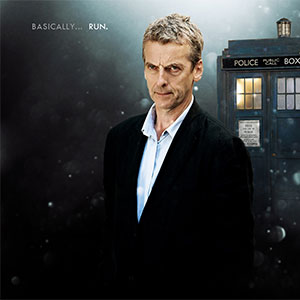

|
|||||||||||||
|
The Twelfth DoctorPortrayed by Peter Capaldi The Twelfth Doctor is to be the twelfth incarnation of the protagonist of the long-running BBC television science fiction programme Doctor Who. He is to be portrayed by Peter Capaldi following the departure of Matt Smith's incarnation in the 2013 Christmas special. Within the series' narrative, the Doctor is a time travelling, humanoid alien from a race known as the Time Lords. When the Doctor is critically injured, he can regenerate his body but in doing so gains a new physical appearance and with it, a distinct new personality. As such, this plot mechanism has allowed the Doctor to be portrayed by a series of actors over the decades since the series' inception in 1963. Capaldi will make his first appearance as the Doctor in the 2013 Christmas special episode. He will be accompanied in the eighth series by incumbent companion Clara Oswald (Jenna Coleman). While Capaldi was the first choice for the role, other actors were also considered in the event that he turned the offer down. Ben Daniels, who was an early favourite following the announcement of Matt Smith's departure, said that he had been approached with a view to assessing whether he would be interested in playing the Doctor, with his name remaining as a potential contender until just before the live BBC broadcast. |
||||||||||||